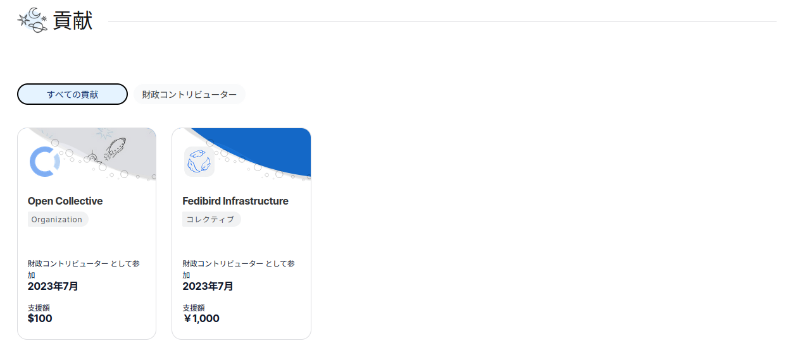

【2023年】ふりかえり【おわりやね】

一泊忘年会の翌日の朝，体重を測ったら1kg増えていました。 Spiegel です Spiegel です Spiegel です…
さて，いつもは年末のふりかえりなどしないのだが，色々と思うことがあり，今年1年をふりかえりつつ今の心境を書いておくことにする。 来年の今頃，これを読み返して私はどう思うのか。 別に yomoyomo さんや大久保ゆうさんの真似がしたかったわけじゃないからね！
心臓リハビリ＠がんばらない
昨年末に心筋梗塞をやらかし，今年に入ってフィットネスバイクを購入して心臓リハビリを始めた。
念のために言うと私は「スポーツ」なるものが嫌いである。 でも，楽しいことのために身体を動かすのであれば OK だ。 そう。これは「スポーツ」でもなく「リハビリ」でもなく「遊び」なのである。
昨年秋にクロスバイクを購入して三十数年ぶりに自転車に乗ることの楽しさを思い出していなければフィットネスバイクで毎日ペダルを漕ぐこともなく，お散歩カメラで松江市内を走り回ることもなく，挙句に週末に10km以上先の温泉に通うこともしなかっただろう。


正直に言うと，20年以上前にちょっと死にかけて以来，気分的には「余生」を生きてるつもりだったのね。 当時は5年後生存率50%とか言われてたし。 でも今回心筋梗塞になって「私って自分で思ってる以上に『生』に執着してるんだな」と気付いた。 というか，それに気付くまで20年以上かかってしまったわけだ。 これは格好悪い（笑）
というわけで「執着してるのなら，もっと積極的に生きていんじゃね？」と認識を改める年となった。 老害上等！ …まぁ，頑張らずに徐々にね。
五体満足のまま死ぬ人などいない
もうひとつ。 個人的に大きな出来事としては親父殿の死がある。 いや，この歳になれば友人や身内の死など珍しくなくなるが，それでも父親の死は「自分の順番が近づいてきた」と実感させる出来事であった。 何度も死にそうな目に遭いながら意地汚く生き残ってる自分と，急速に身体の機能が失われて不可避の死に臨む父親をどうしても比較してしまう。 五体満足のまま死ぬ人などいないんだなぁ，と改めて思った。
自分自身がどういう死に方をするかは分からないが，ひとつだけ確信を持って言えるのは，おそらく死ぬ間際に文字通り「死ぬほど後悔」するんだろうな，ということだ。 今だってときどき過去の所業がフラッシュバックして頭を抱えることがあるのに，幸せに死ねるビジョンが浮かばない。
でも，ラノベよろしく仮に「死に戻り」することができたとしても，たぶん同じ選択をするんじゃないだろうか，私。 だって理由があってそれを選んだんだもの。 たとえそれが他人から見て碌でもない理由であっても。 人生の選択肢はゲームのように平等に与えられることはない。 「自由意志」なんて宗教上のフィクションっスよ。
というわけで，ふりかえってみれば，親父殿の死によって思ったよりもダウナーな気分になっているようだ。 それは，このブログの記事数が夏以降減少していることからも分かる。 ホンマ，休日のサイクリング&お散歩カメラが良い気晴らしになったよ。
Mastodon に軸足を移す
さて，内向きの話はここまで。
ネットで大きな話題のひとつは，昨年後半から続く 𝕏 (旧 Twitter) の暴走（？）だろう。 誰かが言っていた気がするが，もはや 𝕏 は「マスク（とその一味）の SNS」と言っていいかも知れない。 そう考えると「まぁいいか」って気分になる。 少なくとも万人のためのプラットフォームではなくなったのは確かであろう。
というわけで SNS に関しては完全に Mastodon に軸足を移すことにした。 これが昨年末の話。
そのうちに代替サービスがボコボコ生えてくるようになった。 個人的には Mastodon 以外の遊び場としては Bluesky に常駐している。 まぁ Bluesky はまだクローズド・ベータなので，分散化が機能するようになり，本当に不特定多数に開放されたらどう転ぶか分からないけど。
あと Mastodon や Bluesky にポストするためのコマンドラインツールを作ったりもしている。 ボットもこのツールで運用している。
一方で 𝕏 については，秋に入って期間未定で活動を休止している。 その後も 𝕏 の話は色々と漏れ聞くが，現状では無料ユーザは TL を眺める以外に殆ど何もできないサービスに成り下がってるみたいだし，かといってお金を払ってまでやりたいと思えるサービスでもなくなってしまった（個人の感想です）。
𝕏 に金を払うくらいなら Fedibird に寄付するよ。 つか，実際に7月から継続的な寄付を始めたけどね。

{kind=link}
Open Collective
私が参加する Fedibird は2023年末の時点でも寄付を募っている。 マネタイズの問題は難しい。 一方が他方を搾取する関係であってはいけない。 それはサービス提供者にも利用者にも言えることだろう。
FOSS 製品開発なんかでも時々問題になるが，たとえそれが合意の上であっても，搾取されていると感じるとモチベーションは下がっていく。 提供している側は好きで作って維持しているのに，ブラック企業のごとく強制されたくはない。 利用している側は，自身の行動や個人情報を搾り取られ大金に変えられているのを見て気分がいい筈がない。 どちらもそれは奴隷と変わらないのだ。
お金の話
お金の話といえば Togetter の中の人が書いておられる記事がなかなか面白かった。
いや，当事者にとっては面白いでは済まない話ではあろうが。 たとえば
一つの広告枠から得られる収益が減れば、Googleは案件を増やすしか収益を増やせません。昨今、Googleのネットワーク広告の品質低下は、それまでは禁止されていたネガティブな商材が入稿できるようになったとか、接続するネットワーク広告の数を増やしたことで悪質な広告やクリエイティブが配信できるようになってしまったことが考えられます。つまり、Googleが門戸を開放して、より多くの広告が流通する状態を作ってしまったと言えそうです。
それだけに止まらず、それまではGoogle自らがNGにしていた追尾型の広告や全画面広告などを自らの利益のために開放してしまったというのもあるでしょう。ユーザの体験を犠牲にする商品を出してしまった。それによりネット広告が信頼を失い、アドブロックが普及してしまうなどの悪循環を生んでしまう結果になってしまっています。
とあり，そういえば昨年末に「米国 FBI は広告ブロッカーを推奨している？」なんて記事を書いたなぁ，と思い出した。 Togetter の中の人の記事には
裏側のシステムはもっと複雑だとは思いますが、素直に考えると、アドブロックを解除設定してもらって広告を表示さえしてくれれば、それをクリックしなくてもメディアの収益に繋がるようになるということです。とっても簡単な応援方法ですね！
とも書かれているが，正直に言って「それは無理」という他ない。 広告モデルが比較的好意的に捉えられていたのはゼロ年代までだろう。 Cory Doctorow さんによる
Here is how platforms die: first, they are good to their users; then they abuse their users to make things better for their business customers; finally, they abuse those business customers to claw back all the value for themselves. Then, they die.
プラットフォームはこのように滅びていく。まず、ユーザにとって良き存在になる。次に、ビジネス顧客にとって良き存在になるために、ユーザを虐げる。最後に、ビジネス顧客を虐げて、すべての価値を自分たちに向ける。そうして死んでいく。
という話は広告システムにも及んでいるということだ。
そもそも広告とは「注目の搾取」であり，決して対等な関係にはなり得ない。 私は広告による収益モデルは既に曲がり角に来ていると思っていて「今もその代替はありません」とか悠長なことを言っている場合じゃないと思うのだが，どうだろう。
カオスはどこにある
これまた最近の記事だが yomoyomo さんが『ウェブログ・ハンドブック』の訳者あとがきをご自身のサイトで公開されている。
なんでも『ウェブログ・ハンドブック』が刊行されて20年なんだって。
しかし，改めて読むと感慨深いよねぇ。 私も以前に書いた「「さよならはてなダイアリー」 ― 黒 Web 2.0 の終焉」で，はてなの中の人が「日本人にはBlogより日記」などと言ってた話を紹介したが，当時の掲示板，日記，テキスト，そしてブログを巡るプレイヤー達がカオスに入り乱れた狂騒状態というのは本当に面白かった。 そういう猥雑さこそがネットだったよなぁ，とインターネット老人会に片足を突っ込んだ老人脳で思い返すわけよ（笑）
…というコメントに対して結城浩さんが
と返されていて「なるほどなぁ」と思った。
実は，本当に今更なんだけど，今年に入ってようやく VTuber の配信を見るようになったのよ。 きっかけはこれ（Mastodon で紹介されてた）。
やだ，なにこの子，面白い！ そんで過去のアーカイブを見てみたら Xenosaga のゲーム実況とかもしてるぢゃん。 やだ，なにこの子，面白い！ いやぁ，このゲームはハマったよ，その昔。
というわけで，そこから色んな VTuber のコンテンツを（切り抜きも含めて）見るようになった。 特にゲーム実況は密かに仕事中の BGM 代わりにしてたり（大昔ラジオを聞きながら学校の宿題してた感覚）。 Minecraft 実況面白い，とか。 学生の頃，友人宅で PC ゲームやファミコンゲームでみんなワイワイ言いながら遊んでたのを思い出した。 面白いゲームは横で見てても面白いよねー。 特にゲームをプレイしている人のリアクションが（笑）
今まで動画配信ってバカにしてたのよ。 それまで主に見てたのが技術系の解説動画だったりイベント配信だったりなんだけど，ぶっちゃけつまらない！ いや，動画じゃなくて，それを文章（ブログ記事）にしてくれよっていつも思ってた。 仕事なら渋々でも見るけどさ。 解説者の顔のアップとか要らんですよ。 威嚇してんのかって思う。
でも純粋にエンターテインメントならありなのか。 特にライバーとリスナーの（チャット経由の）リアルタイムの掛け合いは見てるだけでも面白い。 そんで面白かった部分の切り抜きとか配信する人がいたり。 切り抜きを見て本人のチャネルに行ってみたり。 本当にネットのカオスはここにあるのかも知れない。
今は様子見程度だが，来年は気に入った VTuber チャネルにメンバー登録とかしてもいいかも知れない。 お財布と相談してね。
というわけで
2023年は色々と心境の変化が大きい年だった。 この歳になって変化することが楽しいと思えるのはいいことなのだろう，きっと。 来年がどんな年になるかは分からないが，いつもどおり「頑張る」ことを頑張らずに，それでもできることの幅をちょっとずつでも広げていけたらいいなぁ。
参考

- trimm ROLLIN サイクルコンピュータ GPS 自転車 速度計 ワイヤレス ナビゲーション ANT+センサー対応 Bluetooth 心拍数 高度計 2.7インチ スピードセンサー(device only)
- Trimm
- B0BLNFPWTQ (ASIN), 8809748020286 (EAN)
- 評価
韓国企業だけどモノは made in Chaina って書いてあった。ナビ機能付きで2万円以下というのは安い。スマホアプリと連携させて操作する。モノクロ液晶だがバッテリ消費は少なめ。各種センサーやスマートウォッチと連携可能。

- GARMIN(ガーミン) vívosmart 5 Black S/M バンド型スマートウォッチ 心拍計【日本正規品】
- ガーミン(GARMIN) (Release 2022-04-21)
- エレクトロニクス
- B09XGYX7JF (ASIN), 0753759301590 (EAN), 753759301590 (UPC)
- 評価
サイクルコンピュータと Bluetooth または ANT+ で連携可能なスマートバンド（活動量計）として購入。 Garmin 製なのに自前では GPS 機能がない（スマホの GPS 機能と組み合わせて使う）。活動量計としての機能は十分というかありすぎる（笑）

- Canon コンパクトデジタルカメラ PowerShot ZOOM 写真と動画が撮れる望遠鏡 PSZOOM
- キヤノン (Release 2020-12-10)
- エレクトロニクス
- B08L4WKDZ7 (ASIN), 4549292179675 (EAN)
- 評価
望遠鏡型コンパクトデジカメ。メモリと充電器（要 Power Delivery）は別に用意する必要がある。使い勝手はまぁまぁ。

- ささみさん@がんばらない【TBSオンデマンド】
- 高山カツヒコ (Writer), 新房昭之 (監督), ――― (プロデュース)
- (Release 2013-05-15)
- Prime Video
- B00FYKN2C4 (ASIN)
- 評価
2013年の作品なんだねぇ。

- 祝福
- YOASOBI (メインアーティスト)
- YOASOBI 2022-10-01 (Release 2022-10-01)
- MP3 ダウンロード
- B0BFG7M98T (ASIN)
- 評価
アニメ「機動戦士ガンダム 水星の魔女」の OP 曲。これを聞き流しながらペダルを漕ぐと，いい感じに cadence が安定する（笑）

- はじめて学ぶ ビデオゲームの心理学 脳のはたらきとユーザー体験（UX）
- セリア ホデント (著), 山根 信二（監修） (著), 山根 信二 (翻訳), 成田 啓行 (翻訳)
- 福村出版 2022-12-15 (Release 2023-07-03)
- Kindle版
- B0C9Z7KGRN (ASIN)
- 評価
Kindle 版が出ている。ゲームデザイナやゲームエンジニアだけでなく，ソフトウェア・エンジニアは全員読むべき。あと，ゲーマーな人も読むといいよ。感想はこちら。

- ハッキング思考 強者はいかにしてルールを歪めるのか、それを正すにはどうしたらいいのか
- ブルース・シュナイアー (著), 高橋 聡 (翻訳)
- 日経BP 2023-10-12 (Release 2023-10-12)
- Kindle版
- B0CK19L1HC (ASIN)
- 評価
Kindle 版が出てた！

- Go言語 100Tips ありがちなミスを把握し、実装を最適化する impress top gearシリーズ
- Teiva Harsanyi (著), 柴田 芳樹 (著)
- インプレス 2023-08-18 (Release 2023-08-18)
- Kindle版
- B0CFL1DK8Q (ASIN)
- 評価
版元で PDF 版を購入可能。事実上の Effective Go とも言える充実の内容。オリジナルは敢えてタイトルに “tips” という単語を入れるのを避けたのに邦題が「100 Tips」とかなっていて，原作者がお怒りとの噂（あくまで噂）